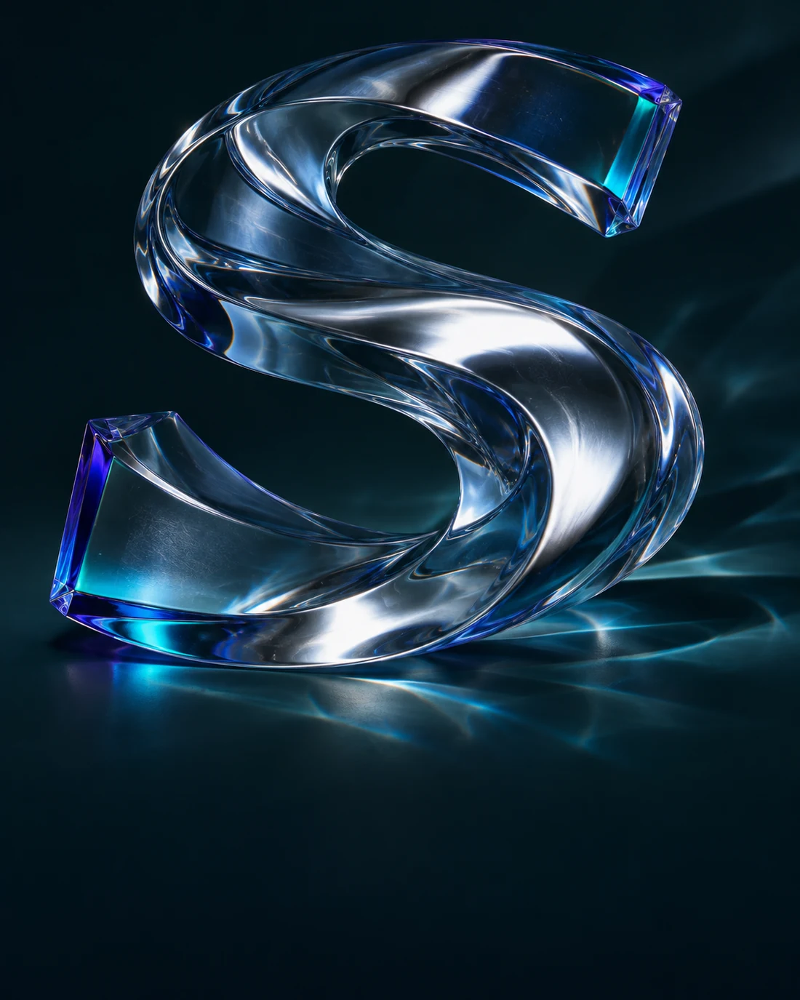

エスズ ワイアール
代表
SHINJI
しんじ

業務案内
工事・施工／現場支援
ポスティング／洗車
AI・デジタル制作
事業紹介QRを拡大
エスズ ワイアール
連絡先
代表
SHINJI
しんじ
メール
ss526s-syr@
yahoo.co.jp
連絡先QRを拡大
表・業務案内
裏・連絡先
光を切替
仕事と作品
地域のお店のチラシ配布から、車の手洗い、現場の施工やデジタル制作まで。
ポスティング
手洗い洗車
写真・映像は業務イメージです。
仕事と作品をすべて見る
紹介動画を見る
お問い合わせ
メールを送る
連絡先を保存
SHINJIの連絡先
この端末に連絡先を保存
閉じる
S's-YRの業務案内
この端末で仕事と作品を見る
閉じる
 エスズ ワイアール
エスズ ワイアール エスズ ワイアールエスズ ワイアールエスズ ワイアール
エスズ ワイアールエスズ ワイアールエスズ ワイアール